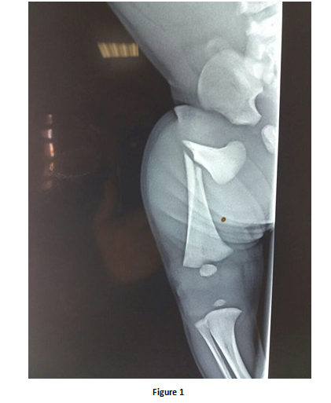

Cas clinique 9
Nouveau né, accouchement par voie basse dystocique qui a présenté à l’examen clinique une déformation du membre inférieur droit et une asymétrie des mouvements spontanés des quatre membres.
Réponse :
Il s’agit d’une fracture de la diaphyse fémorale déplacée avec angulation importante
Réponse :
On procède à une réduction dans l’axe suivi d’une immobilisation par une attelle.
Réponse :
- Lésions traumatiques des parties molles : érythèmes, abrasions, ulcérations, hématome du
sterno-cleido- mastoïdien…
-Traumatismes crâniens : céphalhématome, enfoncement de la boite crânienne…
-Traumatismes du rachis, de la moelle et des nerfs périphériques : Paralysie obstétricale du plexus brachial, paralysie faciale…
- Lésions traumatiques des os des membres : fracture de la clavicule, fracture de l’humérus…
Commentaire 1
Les traumatismes obstétricaux concernent surtout le nouveau-né à terme (80 à 90 % des cas), rarement le prématuré. Il existe plusieurs facteurs favorisants :
- une présentation anormale tels que le siège ou la face, ce qui est source de dystocie
- une disproportion céphalo-pelvienne, à cause d'une déformation, une hydrocéphalie, une macrosomie…
- une extraction instrumentale, forceps ou ventouse
- des manœuvres obstétricales inappropriées le plus souvent, quelle soient instrumentales ou manuelles
- des manœuvres obstétricales liées à une dystocie
- un travail prolongé ou trop rapide
Commentaire 2
Le traitement vise essentiellement une réduction approximative et surtout un contrôle de la douleur par une immobilisation par une attelle. Dés le quinzième jour un cal exubérant apparaît sur les clichés de contrôle. La contention est retirée entre 15 et 20 jours. Les fractures obstétricales sont des fractures de bon pronostic. Elles bénéficient de l’extraordinaire remodelage osseux de l’enfant en croissance. Le traitement orthopédique initial, le moins agressif possible, donne un bon résultat dans la majorité des cas et les séquelles sont rares.
Commentaire 1
1) Fracture de la clavicule :
-Suspectée déjà à la naissance avec la sensation par l’accoucheur d’un craquement.
- À l’examen : sensation de crépitation, mobilité anormale « en touche de piano » de la clavicule qui doit être examinée d’une façon symétrique avec palpation de dehors en dedans.
-Traitement : Simple positionnement du membre supérieur en coude au corps. -Evolution : Formation d’un cal fracturaire au bout de quelques jours sous forme de tuméfaction osseuse sur le trajet de la clavicule avec disparition ultérieure.
-Toujours mentionné à la mère pour éviter l’angoisse ultérieure.
2) Fracture de l’humérus :
- favorisée surtout par les manœuvres utilisées lors de l’extraction.
- diagnostic :- craquement à l’extraction
- présence d’une angulation avec mobilité anormale du bras=> bras déformé.
- mobilisation douloureuse (à éviter)
- Radio du membre supérieur => trait de fracture.
-traitement : immobilisation par un bandage thoraco-brachial coude au corps pendant 3 semaines.
-évolution : favorable la persistance d’une angulation peut s’effacer avec la croissance.
Figure 1

Références
Ndiaye O, Diouf L, Sylla A, Diallo R,Kuakuvi N, Fall M
Lésions traumatiques du nouveau né après accouchement par forceps à la maternité de l’hôpital Abass Ndao.
Dakar Medical, 2001, 46, 1, 36-38
Dakuo H
Traumatisme du membre supérieur du nouveau-né au cours de l’accouchement.
Bibliothèque de la Faculté de Médecine, de Pharmacie et d’Odonto-stomatologie du Mali. Service de Traumatologie et Orthopédie de l’hôpital Gabriel Touré.
N.K. Sferopoulos (1) V.A. Papavasiliou (1)
Décollement epiphysaire proximal du fémur chez le Nouveau-né : Diagnostic précoce par échographie.
Revue de chirurgie orthopédique 1994 80 338-341
Département d’orthopédie pédiatrique –université Aristote.P.Papageogiou 3 546 35 Thessalonique Grèce.
M.R. Sawant, S. Narayanan *, K.O’Neill, I. Hudson
Distal Humeral epiphysis Fracture Separation in neonates diagnosis Using MRI scan
Injury, Int .J. Care Injured 33 (2002) 179 -181
Orthopaedic and Paediatric Departments, Ipswich Hospital NHS Trust, Ipswich IP4 5PD.UK